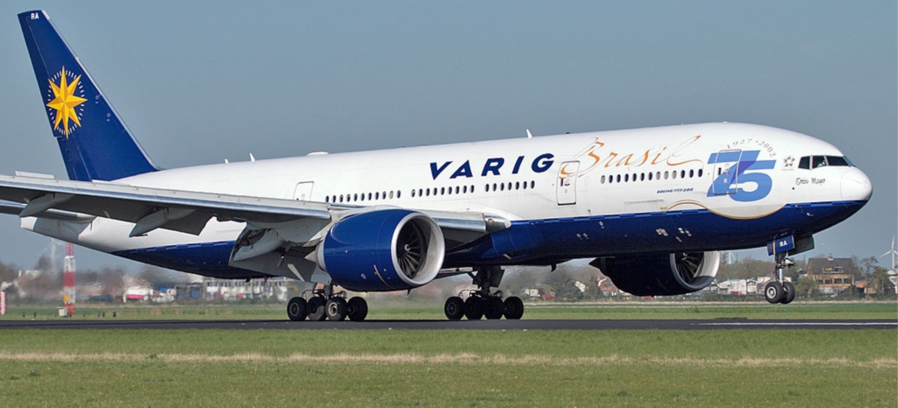
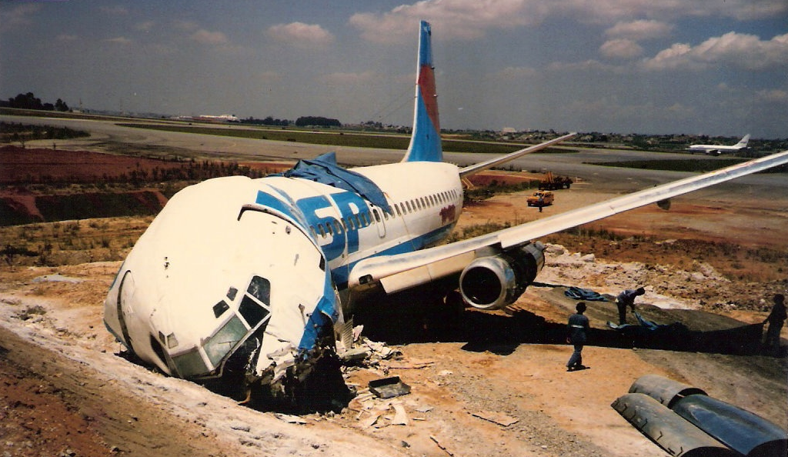
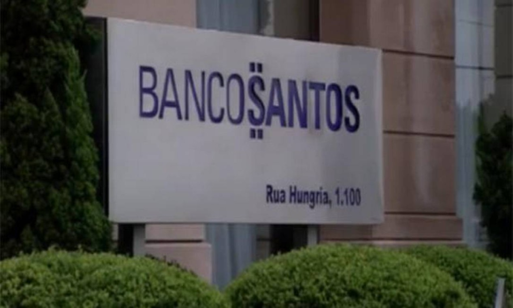
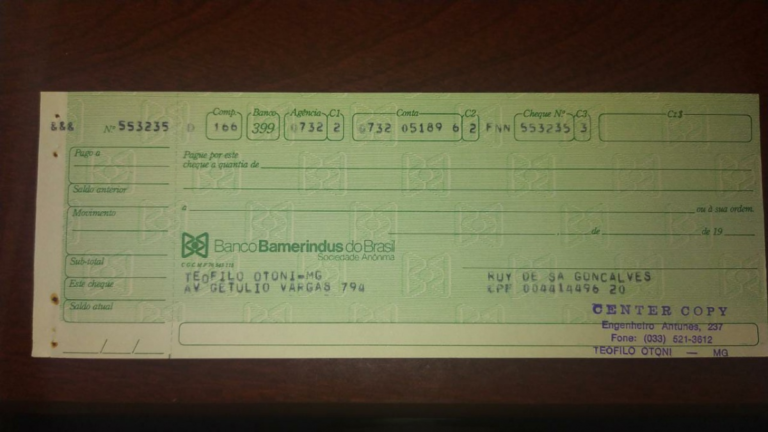
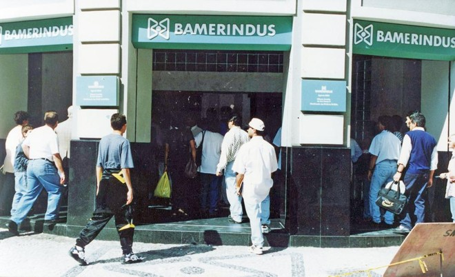

Varig

A Varig foi fundada em 1927 e por muito tempo foi uma das maiores empresas do setor no Brasil e na América Latina, operando voos para diversos destinos ao redor do mundo.
Tudo ia bem e a empresa dominava uma boa fatia do setor. No entanto, começou a enfrentar problemas financeiros significativos na década de 1990, quando passou a enfrentar uma concorrência cada vez mais acirrada no mercado doméstico e internacional de aviação. Em 2005, a Varig entrou com pedido de recuperação judicial devido a suas dívidas e dificuldades financeiras. A companhia passou por um processo de reestruturação, que incluiu a venda de parte de suas operações para outras empresas, como a Gol Linhas Aéreas.
Apesar dessas tentativas de reorganização, a empresa não conseguiu se recuperar completamente. Em 2006, deixou de operar voos regulares e, no ano seguinte, foi vendida para a Gol. Desde então, a marca Varig não existe mais como uma empresa independente.Além disso, a empresa enfrentou diversos problemas, como greves de funcionários e problemas de manutenção em suas aeronaves, o que contribuiu para a perda de sua reputação junto aos clientes.Em 2019, a Justiça Federal condenou a União a indenizar os beneficiários do Aerus, um fundo de pensão dos ex-funcionários da Varig e Transbrasil. Os beneficiários brigavam há décadas para garantir seus pagamentos. Como passou por dificuldades para constituir reservas e fazer o pagamento integral dos benefícios, o Aerus passou por uma intervenção, determinada em 2006.
Vasp
A Vasp (Viação Aérea São Paulo) também foi uma grande companhia aérea brasileira, assim como a Varig. Ela foi fundada em 1933 e teve um papel importante no desenvolvimento da aviação comercial no país, mas enfrentou uma série de dificuldades financeiras ao longo de sua história, que determinaram sua falência em 2008.Os motivos foram diversos e incluíram problemas de gestão, má administração financeira e a concorrência acirrada no mercado de aviação. Além disso, a empresa enfrentou uma série de crises econômicas no Brasil, que afetaram seu fôlego financeiro.

Entre as principais causas da sua falência estão:
- Problemas de gestão: a empresa passou por diversas mudanças em sua administração, o que gerou instabilidade e falta de direcionamento em suas estratégias de negócios.
- Má administração financeira: a Vasp acumulou uma grande dívida ao longo dos anos, em grande parte devido a investimentos mal-sucedidos e a uma política de expansão agressiva.
- Concorrência acirrada: a empresa enfrentou a concorrência de outras grandes companhias aéreas, como a TAM e a Gol, que ofereciam preços mais competitivos e serviços de qualidade similar.
- Crises econômicas: o Brasil passou por diversas crises econômicas nas décadas de 1980 e 1990, o que afetou o poder de compra dos consumidores e reduziu o número de passageiros da Vasp.
- Problemas operacionais: atrasos e cancelamentos de voos, greves de funcionários e problemas com a manutenção de suas aeronaves.
A empresa deixou de operar voos regulares e seus ativos foram vendidos para pagar suas dívidas.
Mesbla
A Mesbla foi uma rede de lojas de departamento fundada em 1912, que teve grande sucesso e cresceu bastante nas décadas de 1950 e 1960. Décadas depois, a empresa passou por um processo de declínio, que culminou em sua falência em 1999.Os motivos para a falência foram diversos e absolutamente decisivos. A empresa enfrentou uma série de crises econômicas no Brasil, que afetaram significativamente seu desempenho financeiro.
Entre as principais causas da falência da Mesbla estão:
- Problemas de gestão: a empresa passou por uma série de mudanças em sua administração, o que gerou instabilidade e falta de direcionamento em suas estratégias de negócios.
- Falta de investimento em tecnologia: a Mesbla não conseguiu se adaptar às mudanças tecnológicas e ao surgimento do comércio eletrônico, o que acabou tornando-a obsoleta frente à concorrência.
- Concorrência acirrada: a empresa enfrentou a concorrência de outras grandes redes de lojas de departamento, como a Lojas Americanas e a Magazine Luiza, que ofereciam produtos e serviços similares a preços mais competitivos.
- Crises econômicas: o Brasil passou por diversas crises econômicas nas décadas de 1980 e 1990, o que diminuiu o poder de compra dos consumidores e reduziu o fluxo de clientes nas lojas da Mesbla.
A Mesbla mergulhou num poço de dívidas e não conseguiu se recuperar financeiramente, o que finalmente culminou em sua falência em 1999.
Banco Santos

O Banco Santos foi um banco fundado em 1953 que, em seu auge, tornou-se um dos mais respeitados e lucrativos do país. No entanto, em 2004, o banco declarou falência após uma série de problemas financeiros e denúncias de irregularidades em sua gestão.
Entre os fatores que decretaram sua falência estão:
- Má gestão financeira: o Banco Santos expandiu-se rapidamente nos anos 1990 e 2000, realizando investimentos de alto risco que geraram prejuízos significativos. Além disso, tinha uma política de concessão de crédito pouco criteriosa, o que levou à inadimplência de muitos de seus clientes.
- Falta de controles internos adequados: o banco não possuía controles internos efetivos para detectar e prevenir fraudes e outras irregularidades em sua gestão.
- Atuação fraudulenta de seus executivos: alguns executivos do Banco Santos atuaram de forma fraudulenta, realizando operações ilegais para encobrir prejuízos e desviar recursos do banco. Em 2020, Edemar Cid Ferreira, ex-presidente do Banco Santos, foi condenado por prejuízos a credores da instituição. Segundo a denúncia do Ministério Público, o ex-banqueiro, seu sobrinho e dois ex-diretores da instituição retiravam recursos do caixa do Banco Santos através de operações financeiras fraudulentas. Os valores eram transferidos para sociedades constituídas em nome de terceiros, que não tinham qualquer controle dos valores. Posteriormente, o dinheiro era destinado a outras contas, no Brasil e no exterior, ligadas a Edemar Cid Ferreira.
- Crises econômicas: o Brasil passou por diversas crises econômicas nas décadas de 1990 e 2000, o que afetou o desempenho financeiro do Banco Santos e de outras instituições financeiras.

Por fim, esses fatores levaram o Banco a acumular dívidas e a não conseguir se recuperar financeiramente, o que acabou em sua falência em 2004. A empresa deixou de operar e seus ativos foram vendidos para pagar suas dívidas.
Bamerindus

O Banco Bamerindus foi fundado em 1929 e tornou-se um dos maiores bancos do país. Porém, em 1997, seus gestores declararam falência após enfrentar uma série de problemas financeiros e de gestão.
Alguns fatores que decretaram sua falência são:
- Política de concessão de crédito pouco criteriosa: o Banco Bamerindus concedia empréstimos a empresas e pessoas físicas sem a devida análise de risco, o que aumentou o risco de inadimplência e reduziu a rentabilidade do banco.
- Escândalos de corrupção: o Banco Bamerindus foi envolvido em escândalos de corrupção, com acusações de envolvimento em lavagem de dinheiro e de conexões com políticos corruptos.
- Problemas de governança corporativa: o Banco Bamerindus enfrentou problemas de governança corporativa, com conflitos de interesse entre os acionistas e a gestão do banco.
Em 2019, um ex-desembargador do Tribunal Regional Federal da 3ª Região e um advogado foram condenados por lavagem de propina de R$ 1,5 milhão paga pelo Banco Bamerindus. Além de cumprir quase nove anos de prisão, o ex-juiz perdeu 15 apartamentos em Campo Grande, que foram destinados para a União.O fim do Bamerindus veio recheado de dívidas e impossibilitou o até então gigante de se reerguer, decretando sua falência em 1997. Mais tarde, o banco foi comprado pelo Banco Itaú, que assumiu suas operações e passivos.